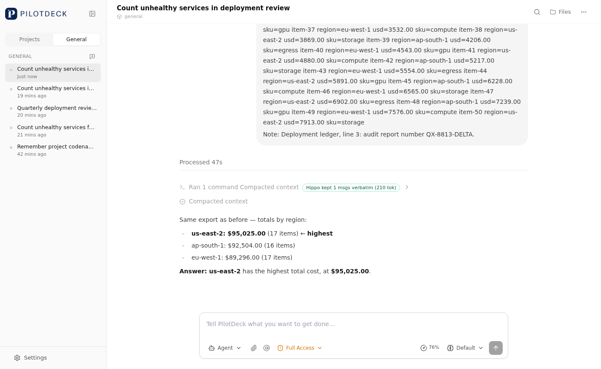

PilotDeck 在上下文吃紧时会压缩对话：保留最近一段（tail）的原文，把更早的历史摘要成一段文字。
摘要保得住大意，但会丢掉低频的精确事实——基因名、频率数字、文件路径、检查点、决策记录，
而这些正是 Agent 之后要逐字复述的东西。Hippo 不打算做一个更好的摘要器，
而是在 CompactionEngine 上加一条可开关的保留路径：压缩前对即将被摘要的消息逐条打分，
按一个固定的 token 预算挑出得分最高的若干条，让它们的原文和摘要一起进入压缩后的上下文。
S(m) = 0.85 × sim(q, m) # 与当前待办请求的语义相关度（默认 BM25，可选本地 embedding）
+ 0.15 × position_decay(m) # 越靠近当前越可能相关
+ 0.00 × idf_pagerank(m) # 实体共现图核心度；默认权重 0，公式项与配置项保留
retentionBudgetTokens = max(256, floor(tailTokenBudget × 0.2))
const engine = new CompactionEngine({
model,
// 不传 scorePolicy 时，引擎走纯上游摘要路径
scorePolicy: buildEbbinghausPageRankPolicy({ wSim: 0.85, wTime: 0.15, wRank: 0 }),
});
关键不在打分公式，在路径。摘要是有损的，保留块不是：Hippo 把少量消息从"将被摘要掉"的集合里直接拿走， 逐字放回压缩后的上下文，因此这部分内容不受摘要模型能力波动影响。打分公式只决定"拿哪几条"。
RETENTION_BUDGET_RATIO = 0.2，
src/context/compaction/CompactionEngine.ts），下限 256 tokens。对话再长，压缩后的上下文也不会因为"想多记一点"而失控。pickRetained 外层 try/catch），不阻塞对话。
一处机制细节：压缩不一定由新的用户请求触发（一条超长工具输出也能撑爆预算）。此时 tail 里没有用户消息，
相似度项会归零。引擎现在回退到全对话中最近的一条真实用户请求，而不是用空串打分；
撤销这条回退会让 tests/context/hippo-retention.spec.ts 里的回归用例确定性失败。
| 对话长度 N | 压缩前 tokens | 上游压缩后 | Hippo 压缩后 | 逐字事实 / 20（上游 → Hippo） |
|---|---|---|---|---|
| 40 | 3,906 | 1,153 | 1,381 | 0 → 8 |
| 80 | 8,291 | 2,368 | 2,634 | 0 → 9 |
| 160 | 17,034 | 4,739 | 5,339 | 0 → 18 |
来源：benchmarks/results/2026-09-11T11-16-22-522Z.json（groups[]；seed 20260911，每格 10 cases 的中位数，
30/30 cases deterministic=true）。指标 = 20 条注入事实中，压缩后上下文里逐字（而非转述）仍在的条数。
代价是明着的：Hippo 压缩后 token 是上游的 1.11–1.20×，多出来的是保留块，不是省下来的。
上游的 0 来自"不生成 FACT 文本的假摘要器"，它是"有损摘要 vs 逐字保留"的结构性对照， 不能当作真实摘要能力上限——真 LLM 的对照见 2.4。该指标是逐字保留的召回代理，不是回答正确率。
| 场景 | 上游（不做保留） | 留出集 20260921–30 | 独立抽检 20261001–10 |
|---|---|---|---|
| en N=80 | 0 | 9.4 | 9.2 |
| en N=160 | 0 | 17.9 | 18.0 |
| zh N=80 | 0 | 6.0 | 6.0 |
| zh N=160 | 0 | 10.0 | 10.0 |
留出集：benchmarks/results/holdout-2026-09-11T11-19-13-567Z.json · 抽检：
benchmarks/results/spotcheck-seeds20261001-2026-09-11T16-59-44-443Z.json ·
记录：docs/independent-spotcheck.md。单位为"20 条事实里逐字保留几条"，10 个 seed 的均值，每个 seed 与自己配对。
两轮的四个格子都是 10 胜 0 平 0 负，双侧精确符号检验 p = 0.002 （10 个 seed 全胜时，p 的最小可能值就是 0.002）。抽检用的是与 tune、ablation、留出集全部不相交的 seed； 四格均值与留出集同向、差值 ≤ 0.2，上游四格仍全部为 0。
权重口径：默认 0.85/0.15/0.00 的正当理由是对齐调参 argmax 且少一项，不是"权重优化带来了提升"。
在同一留出集上与上一版默认 0.7/0.15/0.15 做配对比较是 7 胜 / 33 平 / 0 负，
四个格子无一显著（p = 1 / 0.5 / 1 / 0.125）。rank 项不是删掉，是权重落 0，代码与配置项都留着。
| 场景 | 召回 | 精度 | 随机基线 | 相对随机 |
|---|---|---|---|---|
| en N=40 | 6/20 | 100% | 36% | 2.8× |
| en N=80 | 7/20 | 100% | 18% | 5.7× |
| en N=160 | 16/20 | 100% | 9% | 11× |
| zh N=40 | 4/20 | 100% | 37% | 2.7× |
| zh N=80 | 4/20 | 100% | 18% | 5.6× |
| zh N=160 | 8/20 | 89% | 9% | 10× |
来源：benchmarks/results/extraction-precision-2026-09-11T13-39-26-139Z.json
（precisionMedian / recallMedian / liftOverChance；留出 seed 20260921–23，3 个 seed 的中位数）。
精度按引擎自曝的保留块逐消息算，不用指纹反推。
保留块几乎全是当前 query 需要的事实（只有 zh N=160 混进一条噪音），说明打分确实把信号和噪音分开了， 不是在把整段历史一股脑塞回来。召回受 token 预算限制（实测用掉预算的 88–99%），所以是 4–16 条而不是 20 条。
| 摘要输出预算 | 事实措辞 | 当前话题答对 · 上游 | 当前话题答对 · Hippo | 四例中摘要触顶（上游 / Hippo） |
|---|---|---|---|---|
| 吃紧 1,500 tok | shared | 10/16（重复 4、6） | 16/16（重复 8、8） | 3 / 4 |
| 吃紧 1,500 tok | decorrelated | 10/16（重复 6、4） | 16/16（重复 8、8） | 3 / 4 |
来源：benchmarks/results/real-llm-topic-switch-2026-09-11T12-45-03-182Z.json
（N/topic=160，每话题 10 条事实、每例抽 4 题问当前话题，2 个留出 seed × 2 次重复）。
宽裕预算轮（8,000 tok，real-llm-topic-switch-2026-09-11T12-29-27-528Z.json）：当前话题四臂全部 16/16，
旧话题臂间只差 1 题，而同配置重复内的摆动有 3–4 题 —— 摆动大于臂差，那一轮不声明方向。
可声明的是上面这四行：预算吃紧时臂差 6 题，约为上游自身摆动的 3 倍，Hippo 四次重复零摆动，两种措辞同向。 两轮吃紧轮的摘要触顶次数几乎一样（3 比 4），所以"上游被截断、Hippo 没被截断"不是解释； 解释在两臂的保留区计数（Hippo 8/10，上游 6/10 全靠 tail）。保留的价值在摘要器扛不住预算时显现。 每格只有 16 题、2 个 seed，且摘要器与 judge 同模型，因此这里只声明方向，不换算成"提升 X 点"。
| 套件 | 口径 | 结果 |
|---|---|---|
根套件 npm test |
本机工作区，2026-09-12 实测（dist/tests/**/*.spec.js，34.3 s） |
519 项 = 517 通过 / 0 失败 / 0 cancelled / 2 skipped |
| 根套件（CI / 全新 clone） | .github/workflows/ci.yml 与 README §5：上游 .gitignore 把 *.test.ts 当本地草稿，
我们的新测试 git add -f 入库，上游自己的 4 个草稿文件（10 例）不入库 |
507 项 = 505 通过 / 0 失败 / 2 skipped |
| UI chat-v2 套件 | 本机实测 cd ui && npx vitest run src/components/chat-v2/，2026-09-12（6.4 s） |
13 文件 / 114 测试通过 |
两个数（519 与 507）的差额可以本地复核：git check-ignore -v tests/gateway/upload-store.test.ts 会打印命中
.gitignore:200:*.test.ts，那 4 个文件合计 10 例。ui/ 下整体 vitest run
不是全绿（上游既有的 5 个无关文件常年失败，见 README §5），所以这里只报 chat-v2 这一个目录。
pnpm benchmark，生信对话把 20 条精确事实分散在前 75%，tail 提问要求逐字复述；
每格 10 cases，全部 deterministic=true。上游臂用不生成 FACT 文本的假摘要器，做结构性对照。pnpm benchmark:holdout。调参与消融只用 ≤ 20260920 的 seed；
留出集固定取 20260921–30 共 10 个 seed，从未参与任何选择（权重、IDF 开关、PageRank 迭代数）。
统计上每个 seed 与自己配对，报 per-seed 差值、胜/平/负与双侧精确符号检验 p。PILOTDECK_HOLDOUT_SEED_BASE 覆盖，任何人都能自己换 seed 重跑。pnpm benchmark:real-llm / pnpm benchmark:real-llm-topic-switch，
摘要器与评审员均为 DeepSeek-V4-Flash，每格 16 题 × 2 seeds，两轮换不同的摘要输出预算。pnpm benchmark:no-regression —— 不传 scorePolicy 时，
引擎输出必须与上游基线 85be774 逐字节一致（golden fixture benchmarks/baseline-85be774.json）。
本页实测输出：NO-REGRESSION OK: scorePolicy=undefined output matches upstream 85be774 baseline.benchmarks/results/*.json 里的一个字段，
README §4.8 给了逐数字 → JSON 行的对账索引。docs/independent-spotcheck.md）也明确这么标注：
它回答的只是"换一批从没用过的 seed，旗舰数字还在不在"，不能替代独立评审或人工抽检。
真 LLM 闭环里摘要器与 judge 是同一个模型，这项偏差没有被消除。

Ran 1 command Compacted context 右侧是保留徽章，
压缩后对话继续答出 us-east-2 has the highest total cost, at $95,025.00.（录屏 UI 为英文）。
徽章文字，逐字：Hippo kept 1 msgs verbatim (210 tok)
悬停 title，逐字：
Selective retention (ebbinghaus-pagerank) preserved these messages word-for-word instead of folding them into the summary.
media/pilotdeck-compaction.webm —— 一段真实会话：多轮大段工具输出，上下文吃紧时 compaction 触发，
保留徽章出现在压缩分隔线上，被保留的消息逐字留在上下文里而没有进入摘要。保留摘要在 v2 聊天面板里正常渲染。
如实说明：录屏由 Playwright 驱动真实构建 UI（http://127.0.0.1:3001）跑出，输入是脚本而非人手；
为让 compaction 在这段短会话里触发，临时调低了 agent.maxContextTokens，事后已还原，产品代码没有为录屏改动。
.github/workflows/ci.yml）：typecheck → 无回归门 → 根套件；测试步骤只在
# fail 计数非零时失败，不放宽对 flake 的容忍。另有 docker-build.yml。
保留徽章另有专项测试：根套件 tests/context/retention-reporting.spec.ts，
UI 侧 useChatMessages.retention.test.ts（14 例）与
MessageComponent.retention-badge.test.tsx（6 例，做过变异验证：把徽章渲染条件改成恒假后 4/6 正例失败）。scorePolicy 缺省 = 上游路径，golden fixture 锁定上游 85be774 的行为，
pnpm benchmark:no-regression 逐字节比对；App 层本 fork 默认 retention: hippo，
off 一键关回上游。Hippo 是纯增量：不传策略时输出与上游完全一致。unref() 掉的超时定时器：本应用来 settle 一个被 await 的 promise
的定时器被 unref()，事件循环先排空，调用方拿到永不 settle 的 promise 而不是超时错误。
三处站点（src/network/fetch.ts、src/task/runtime/BackgroundTaskRuntime.ts 的 wait()、
src/model/streaming/streamModel.ts 的 withIdleTimeout()），每处都配了一个修复前必然失败的测试
（修复后 7/7、6/6、6/6）。其余站点是有意不阻止进程退出，未动。src/context/budget/tokenizer.ts 在长重复串上退化为 O(n²)
（CPU profile 显示 96% 时间在 js-tiktoken 的 bytePairMerge）；
countTokens 换成同一套贪心合并的堆实现后，8,000 字符 8,998.9 ms → 9.1 ms。
数据见 benchmarks/results/tokenizer-scaling-2026-09-11T13-06-44-566Z.json；
tests/context/tokenizer-equivalence.spec.ts 用 906 次比对（900 随机 + 6 固定边界）验证等价性，0 失配。src/web/server/replaceLastTurn.ts 原本写 Math.max(preparedAt, backupMtime, journalMtime)，
而本机 mtime 粒度是 1 ms，两个事务落在同一毫秒就并列，并列由 readdirSync 的任意顺序决定，
启动恢复会挑错事务。改成 preparedAt 可解析时由它单独决定，mtime 只兜底；
新增的测试用 utimes 把旧事务 mtime 推到未来 60 秒，不依赖时序，改回旧代码确定性失败（修复后 16/16）。ui/ 的 tsc --noEmit 是红的（125 个文件报错，根因是依赖图里同时存在两份
@types/react：18.3.29 与 19.2.15）。vite build 实测通过（37.6 s，退出码 0），
所以这是 typecheck 卫生问题，不是构建或运行时故障；修它要动依赖解析并重装，风险大于收益。